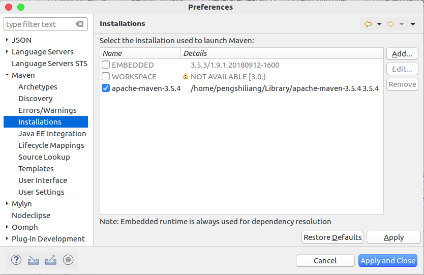
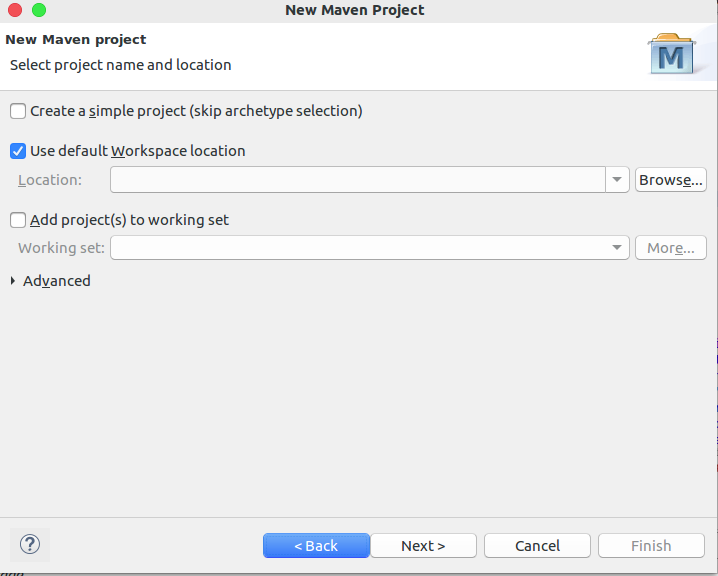
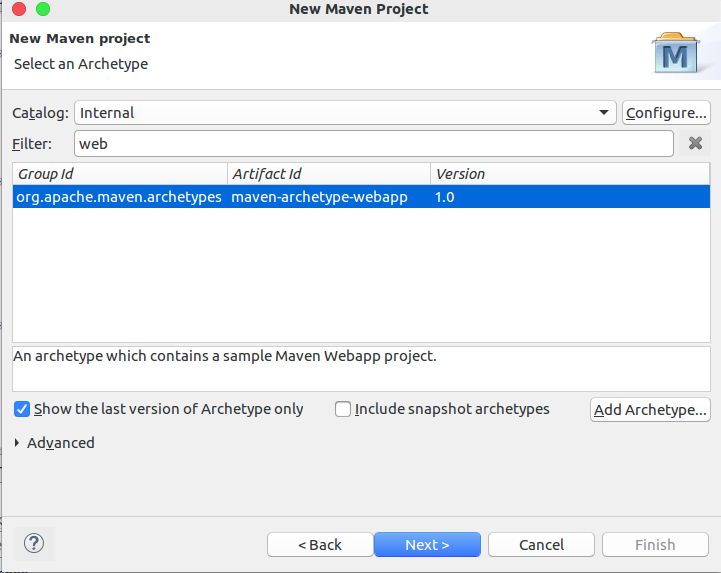
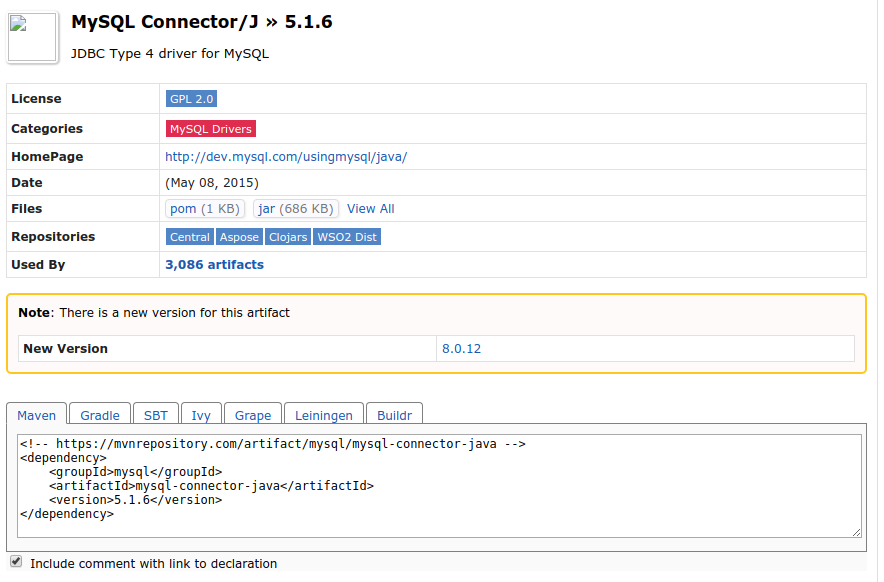

图2
至此，环境配置完成
一般在eclipse中自带maven
通过Windows->Preference->Maven->Installations可以查看
其中EMBEDDED为自带的版本，截图如下

图1
官网下载链接
:
http://maven.apache.org/download.cgi
对于Linux系统：
sudo mkdir /opt/maven
# 解压maven到指定目录
sudo tar zxvf apache-maven-×.×.×-bin.tar.gz -C /opt/maven
# 配置maven环境
sudo gedit /etc/profile
# 在文件内容后追加如下内容
export M2_HOME=/opt/maven/apache-maven-3.5.0
export CLASSPATH=$CLASSPATH:$M2_HOME/lib
export PATH=$PATH:$M2_HOME/bin
# 保存后使配置文件生效
source /etc/profile
# 运行以下指令以验证是否安装成功
mvn -v
# 修改maven源为阿里云及仓库存放路径，以加快下载速度
sudo gedit /opt/maven/apache-maven-3.5.0/conf/settings.xml
<!-- 添加或修改 标签在home目录下生成对应文件夹maven/repository -->
<localRepository>maven/repository</localRepository>
<!-- # 添加或修改 标签 以修改源 -->
<mirror>
<id>nexus-aliyun</id>
<mirrorOf>central</mirrorOf>
<name>Nexus aliyun</name>
<url>http://maven.aliyun.com/nexus/content/groups/public</url>
</mirror>
对于 Windows系统：
1、下载对应版本文件
2、解压到指定路径 如：D:\Program Files\Apache\maven
3、配置环境变量：
MAVEN_HOME:D:\Program Files\Apache\maven
# 追加到Path变量如下内容（注意前面分号问题）
%MAVEN_HOME%\bin\
# 新开cmd窗口并验证
mvn -v
# 配置D:\Program Files\Apache\maven\conf\settings.xml 同Ubuntu
通过点击图1 Add 按钮添加指定版本，配置安装路径即可：
图2
至此，环境配置完成
通过New->Project 并输入maven，到如下界面：

图3
路径设置，一般使用默认，也可自己选择

图4
可以使用默认的archetype，也可自行添加archetype（该操作当前不详述）

图5
Group Id：唯一就好，个人项目随意
Artifact Id：差不多就项目名的意思

图6
点击finish后项目路径分布如下：

图7
右击项目选择 Build Path->Configure Build Path:

图8
点击 Add Library，添加Server Runtime，如有需要可修改Jre System Library

图9
点击刷新，红色叉号就消失了。
右击，运行，则在浏览器金收入 Hello World！ 页面
至此 maven项目建立完成（关于修改 maven项目名，webapp版本暂不详述）
在
图7
中可以看到
pom.xml
通过修改该文件并保存，maven会自动下载或添加对应jar包
其初始内容如下：
<project xmlns="http://maven.apache.org/POM/4.0.0" xmlns:xsi="http://www.w3.org/2001/XMLSchema-instance"
xsi:schemaLocation="http://maven.apache.org/POM/4.0.0 http://maven.apache.org/maven-v4_0_0.xsd">
<modelVersion>4.0.0</modelVersion>
<groupId>com.liang.maven</groupId>
<artifactId>MavenTest</artifactId>
<packaging>war</packaging>
<version>0.0.1-SNAPSHOT</version>
<name>MavenTest Maven Webapp</name>
<url>http://maven.apache.org</url>
<dependencies>
<dependency>
<groupId>junit</groupId>
<artifactId>junit</artifactId>
<version>3.8.1</version>
<scope>test</scope>
</dependency>
</dependencies>
<build>
<finalName>MavenTest</finalName>
</build>
</project>
百度输入，maven进入其 依赖查询官网 : https://mvnrepository.com/
搜索 如：mysql 并在结果中点击第一个链接：

图10
点击后会进入版本选择页面，一般我选择使用人数最多的版本，如5.1.6

图11
点击对应版本链接后，会进入如下页面：

图12
将图中如下内容复制粘贴到
pom.xml
中的
dependencies
标签内：
<!-- https://mvnrepository.com/artifact/mysql/mysql-connector-java -->
<dependency>
<groupId>mysql</groupId>
<artifactId>mysql-connector-java</artifactId>
<version>5.1.6</version>
</dependency>
粘贴后，pom.xml 内容如下：
<project xmlns="http://maven.apache.org/POM/4.0.0"
xmlns:xsi="http://www.w3.org/2001/XMLSchema-instance"
xsi:schemaLocation="http://maven.apache.org/POM/4.0.0 http://maven.apache.org/maven-v4_0_0.xsd">
<modelVersion>4.0.0</modelVersion>
<groupId>com.liang.maven</groupId>
<artifactId>MavenTest</artifactId>
<packaging>war</packaging>
<version>0.0.1-SNAPSHOT</version>
<name>MavenTest Maven Webapp</name>
<url>http://maven.apache.org</url>
<dependencies>
<dependency>
<groupId>junit</groupId>
<artifactId>junit</artifactId>
<version>3.8.1</version>
<scope>test</scope>
</dependency>
<!-- https://mvnrepository.com/artifact/mysql/mysql-connector-java -->
<dependency>
<groupId>mysql</groupId>
<artifactId>mysql-connector-java</artifactId>
<version>5.1.6</version>
</dependency>
</dependencies>
<build>
<finalName>MavenTest</finalName>
</build>
</project>
点击保存，并等待下载完成，下载进度在Progress中查看，下载完成后，可在项目中查看相应jar包：

图13
在此项目基础之上，可以轻松下载想要的jar包（如果要拷贝jar包给其他人的话）